실제 앱에 사용하는 투명 PNG 40개입니다. 모바일에서는 표를 옆으로 밀어 확인하세요.
| 식물 | 1단계 | 2단계 | 3단계 | 4단계 | 5단계 |
|---|---|---|---|---|---|
| 분홍 거베라 | 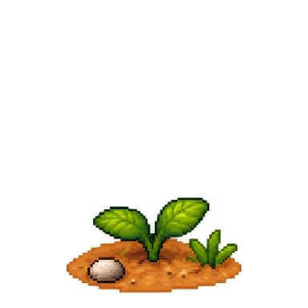 | 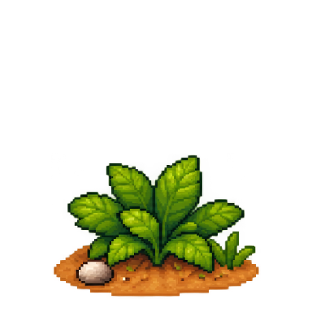 | 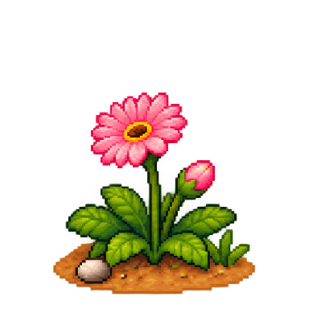 | ||
| 상수리나무 | 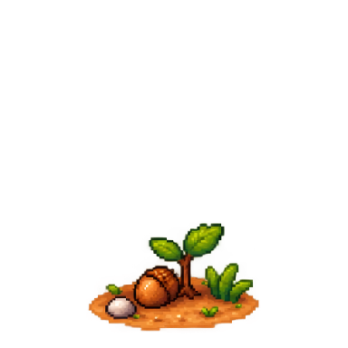 | 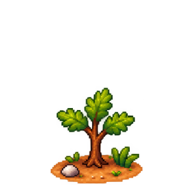 | 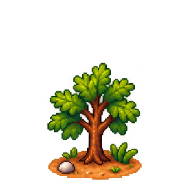 | 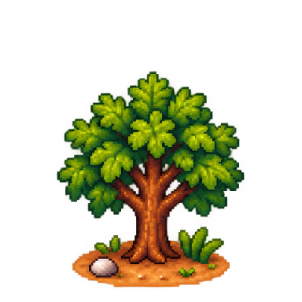 | 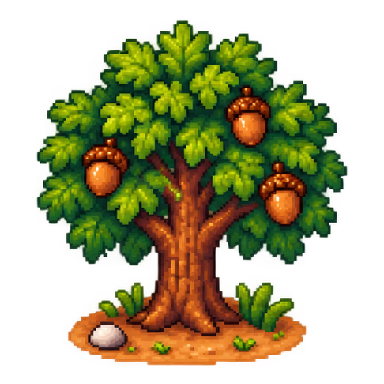 |
| 선인장 | 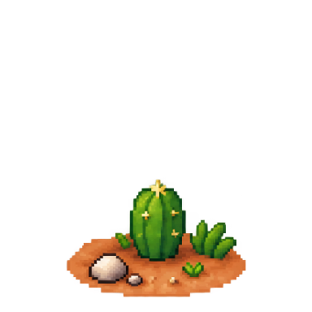 | 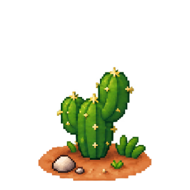 | 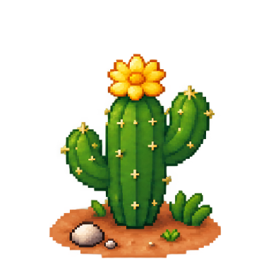 | 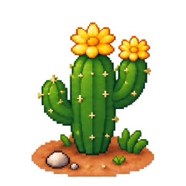 | 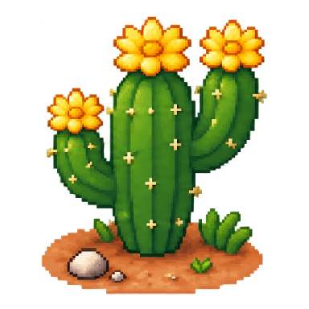 |
| 벚꽃나무 | 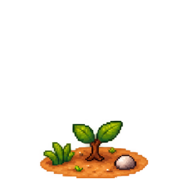 | 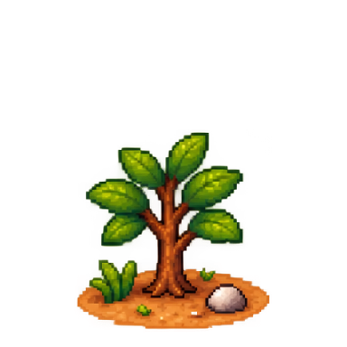 | 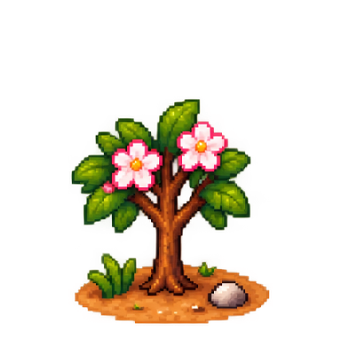 | 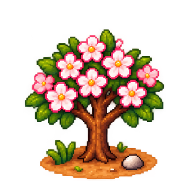 | 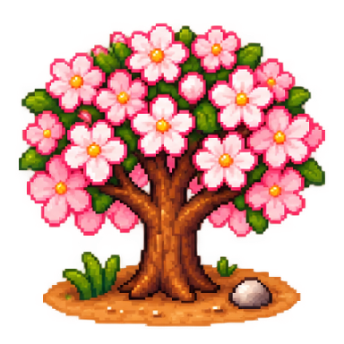 |
| 해바라기 | 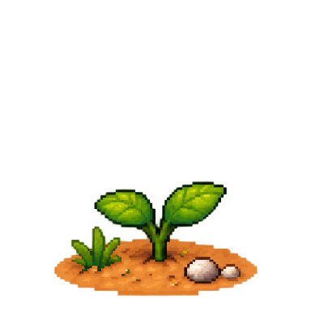 | 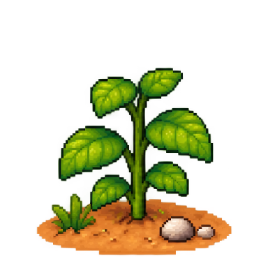 | |||
| 데이지 | 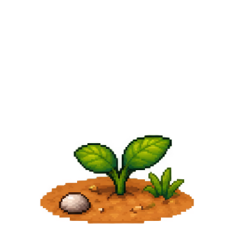 | 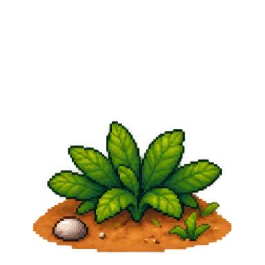 | 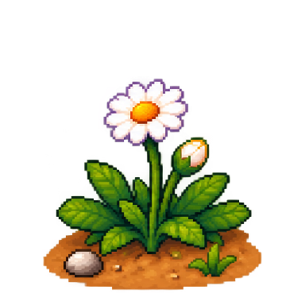 | 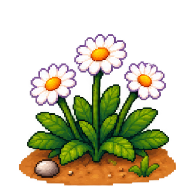 | 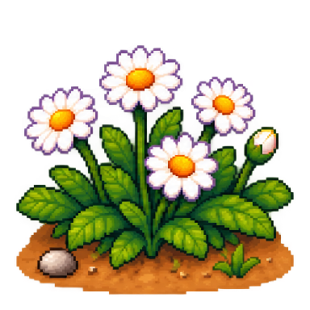 |
| 물망초 | 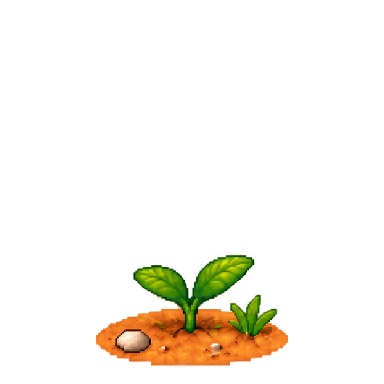 | 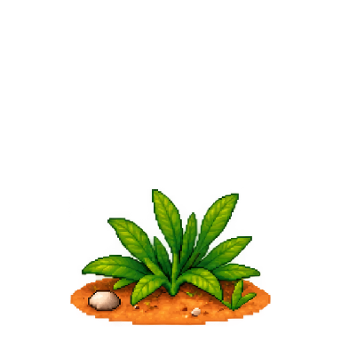 | 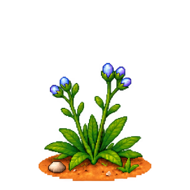 | 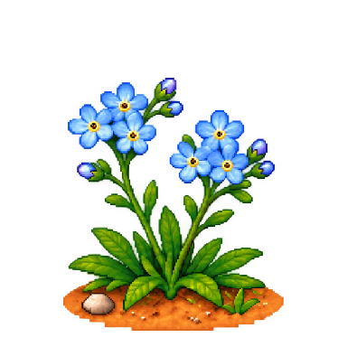 | 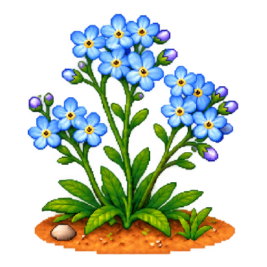 |
| 수국 | 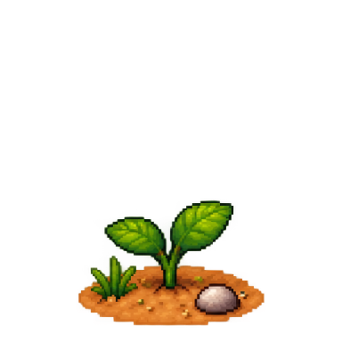 | 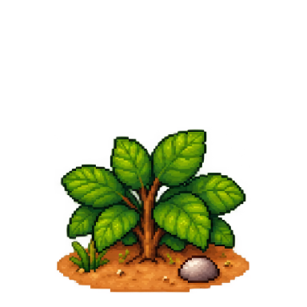 | 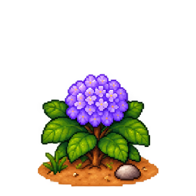 | 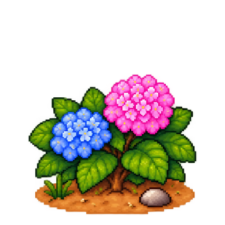 | 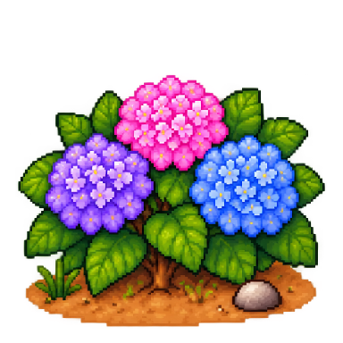 |